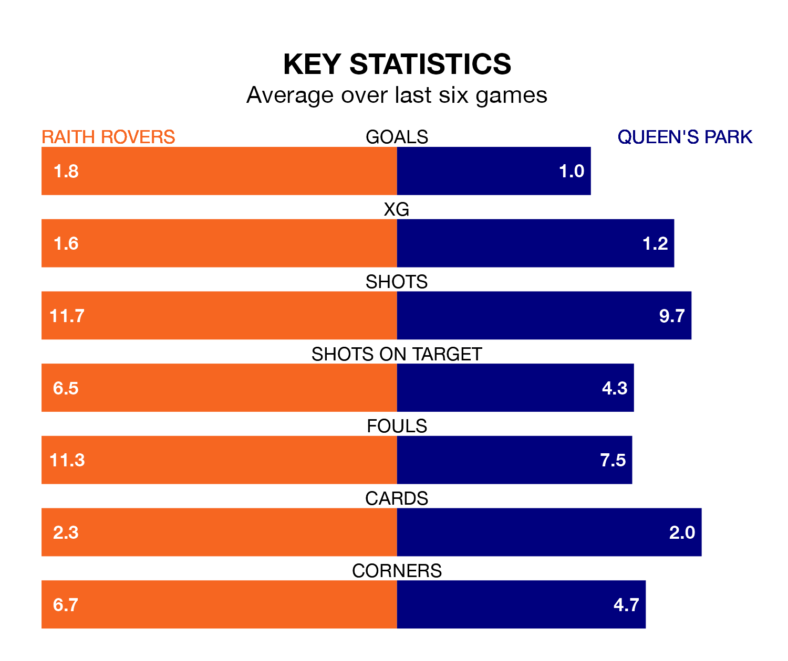

Raith Rovers host Queen's Park in Saturday's match at Stark's Park looking to bounce back from defeat last time out in Scottish Championship.
Raith, who sit top of the league after 20 games, fell to a 1-0 away defeat to Airdrieonians on January 6.
They face a Queen's Park side who picked up a win in their last match, a 2-1 victory against Dunfermline Athletic, and who sit ninth in the table.
In Lewis Vaughan, Raith have the league's sharpest shooter so far this season. He has notched 10 goals in 20 appearances.
Queen's Park's top scorer, with 10 goals in 19 games, is Ruari Paton.
With 37 goals in 20 games so far this season, Rovers are the league's third-highest scorers with 1.9 goals per game. And they are conceding fewer than average, letting in 26 goals at a rate of 1.3 per game.
The Spiders, meanwhile, are below average scorers, with 1.3 goals per game, compared to a league average of 1.4. They have conceded 2.0 goals per game.
The home side are in reasonable form in Scottish Championship, with three wins and two draws from their last six games.
With a win and a draw over that period, the visitors' form is much worse – they have taken four points from 18, compared to Raith's 11.
In the last five years, Raith and Queen's Park have played each other on seven occasions. Raith won four of them, Queen's Park two, and they drew once.
On average, Raith scored 1.7 goals and the Spiders 1.6 in those matches.
Their last meeting was on November 11, when Raith won 3-2 away.
Updated: 13:38 (UTC), 10/01/24